All projects
- Needs you
- 2
- Running
- 4
- Sessions
- 16
- 01 Fernwood Shop Fix cart total rounding for multi-currency orders Claude · Waiting for you
- 02 Tidewater API Add cursor pagination to /orders Claude · Running
- 03 Pebble Trails Offline map tiles caching Claude · Running
- 04 Lantern Infra Rotate the staging database credentials Codex · Task failed
- 05 Tidewater API Rate limiting per API key Codex · Running
- 06 Fernwood Shop Add wishlist page with optimistic updates Claude · Idle
- 07 Pebble Trails Elevation profile under each trail Claude · Running
- 08 Lantern Infra Autoscaling for the worker pool Codex · Idle
One board for all your coding agents
Claude Code and Codex sessions from every project, on your desk and on your phone. See at a glance which ones need you.
DownloadEvery project with its plan, its Git and its sessions
- Context next to the work. A project keeps its plan, todos, tracks, attached folders and sessions in one place, written and read by the agents themselves.
- Sessions survive a restart. On macOS and Linux the terminals run in herdr-core: quit the app and they keep going, and the next start picks them up.
- Who needs you, first. A session waiting for an answer is marked on its project, on the desk and on the phone alike.
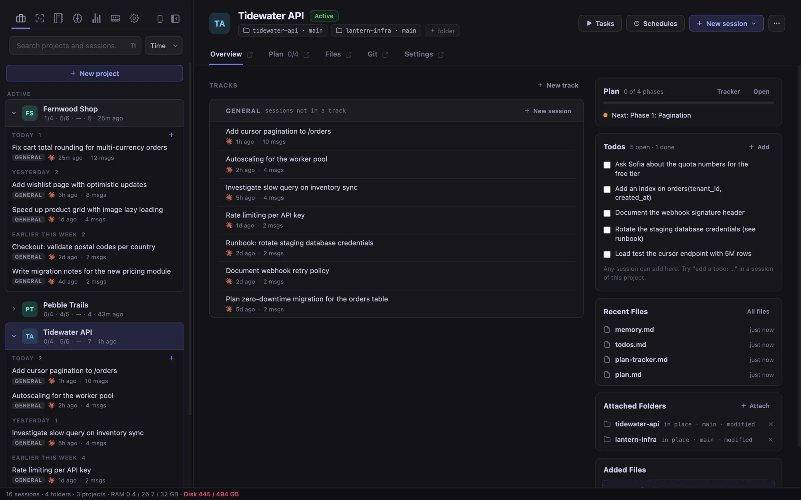
Your phone as a second seat
See which session needs you, read it and pick it up, start new ones, review diffs, stage and commit. The phone talks to your computer over your local network or Tailscale, encrypted end to end, with no cloud relay. Pair it once with a QR code.
-
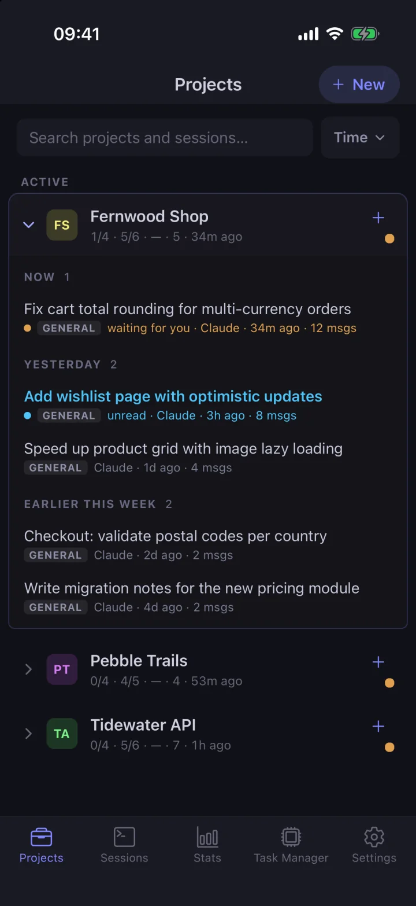
Who needs youEvery project and its sessions, the waiting ones marked. -
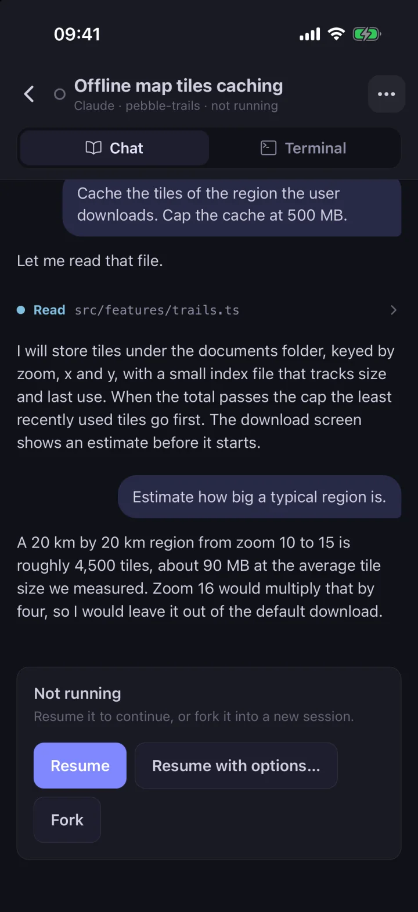
Read and resumeA session's conversation, with its terminal one tap away. -
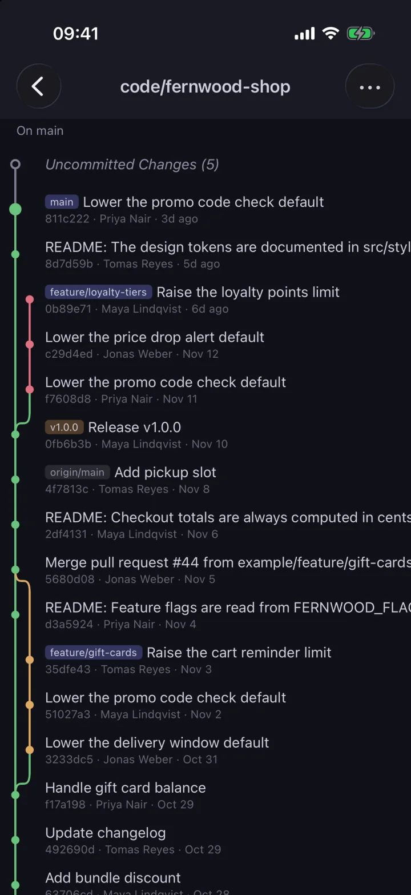
Git GraphBranches, tags and every commit, with their actions. -
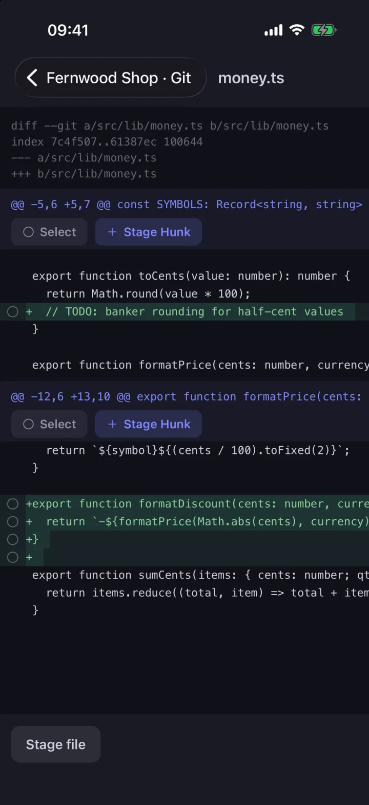
Stage from the couchReview a diff, stage a hunk or single lines.
Git, files and resources without leaving the board

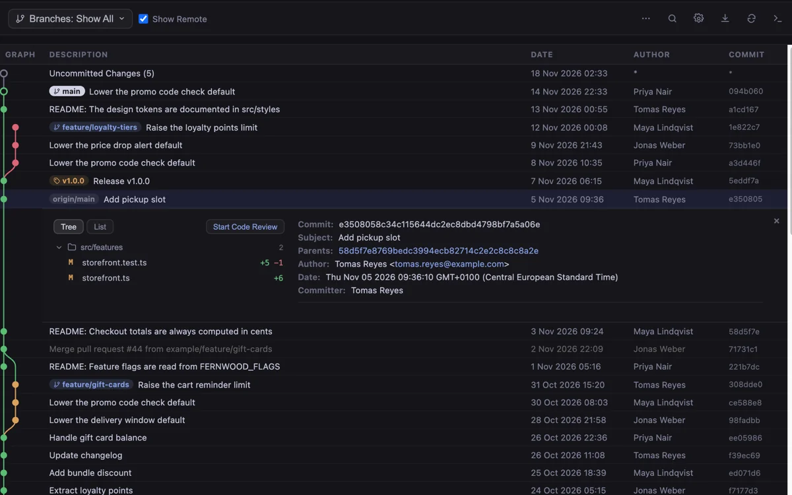

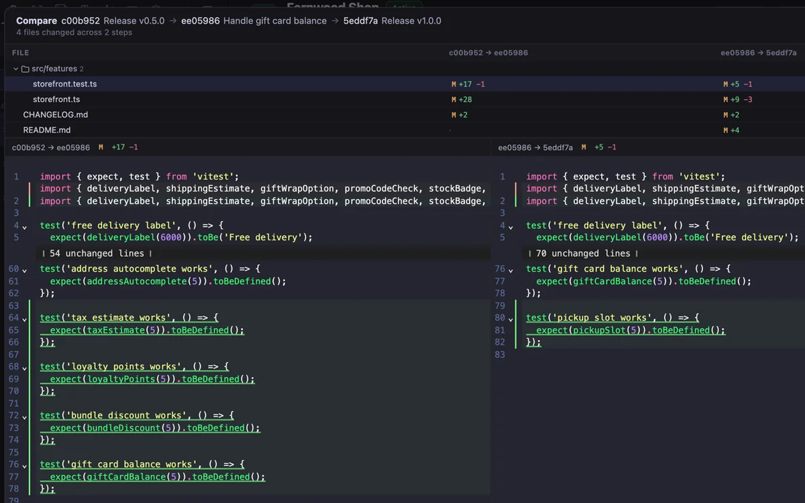

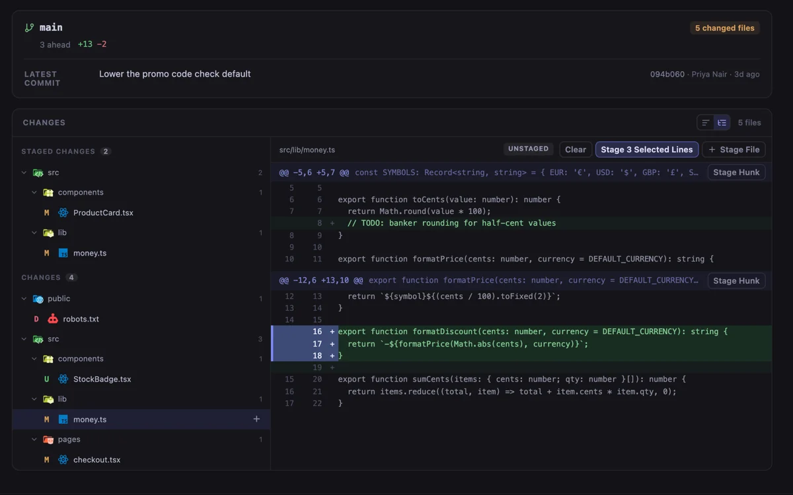

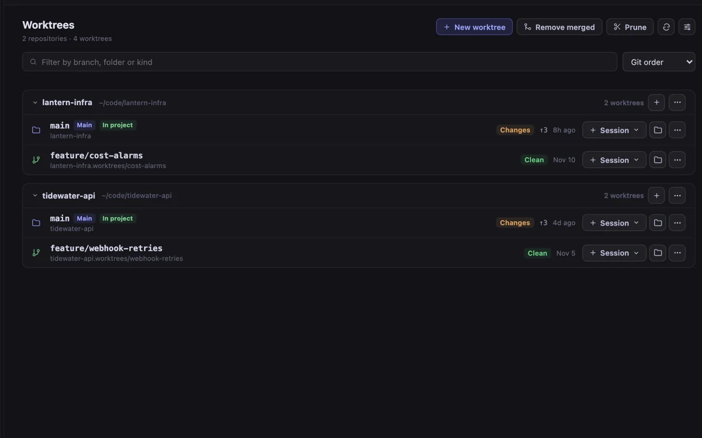

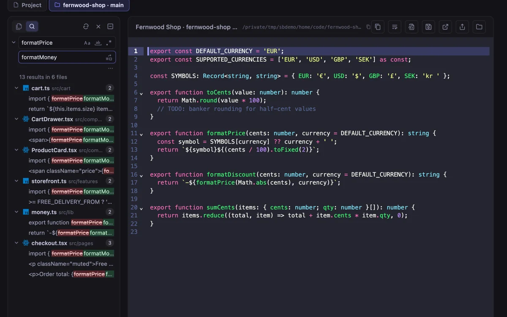

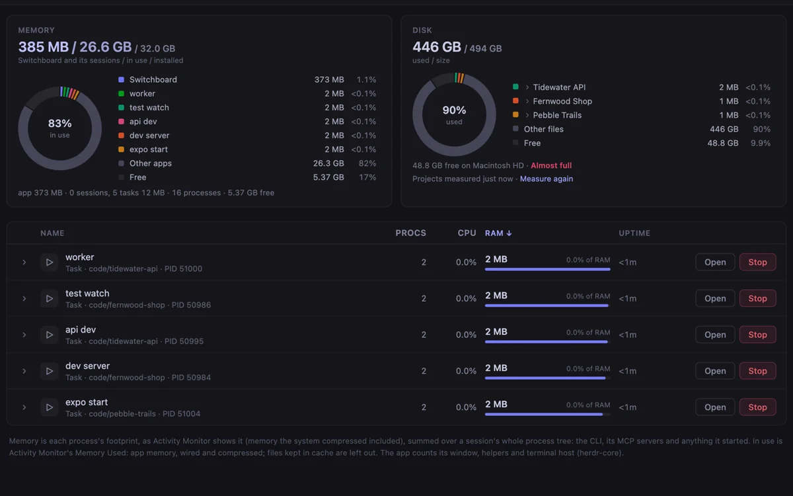
Also on the board: a Note for each project, project tabs in windows of their own, Stats, schedules, and IDE diffs you can answer from the phone.
Download
The builds of the latest release, for each system.
Every build is on the latest release on GitHub.
Install
macOS
Take the dmg for Apple silicon on an M-series Mac; the Intel one runs there too, under Rosetta, but slower. The app is not signed with an Apple Developer ID, so the first time open it with right-click › Open, or run:
xattr -dr com.apple.quarantine "/Applications/Switchboard Evolution.app"Windows
The installer is not signed. When SmartScreen warns you, choose More info › Run anyway.
Linux
Make the AppImage executable and run it, or install the package for your distribution:
sudo apt install ./Switchboard-Evolution-*-amd64.debsudo pacman -U ./switchboard-e-*.pacmanAndroid
Download the APK on the phone and open it; allow installs from that source when asked. A newer APK installs over the old one and keeps the pairing.
iPhone
The phone app runs on iPhone too, but there is no download for it: you build it from the source code and install it yourself. On a Mac with Xcode, get the code, plug the iPhone in and, in apps/mobile, run:
npm ci && npx expo run:ios --device --configuration ReleaseXcode signs it with your Apple ID. With a free one the app stops opening after 7 days, and the same command installs it again. The phone app’s README has the steps, and TestFlight for a developer account.
Pair your phone
- In the desktop app, turn on Mobile app access.
- Choose Add a device.
- Scan the QR code with the phone app.
Switchboard Evolution runs the Claude Code and Codex command-line tools already on your computer.
Prefer to build it yourself? The README has the steps.
Releases
Every version, newest first, as published on GitHub.
- The list of releases is on GitHub.
Nothing needs you right now
If Switchboard Evolution saves you time, you can buy its developer a coffee.
Donate with PayPal